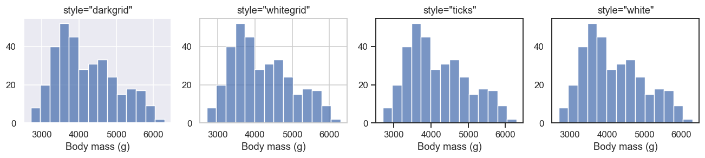
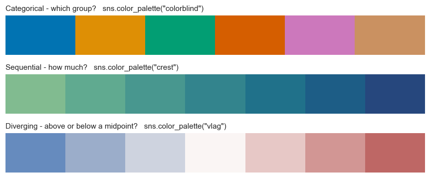
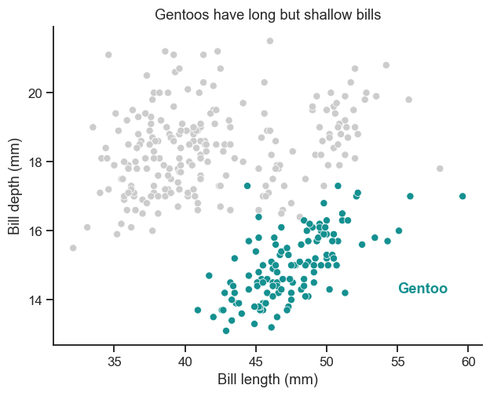
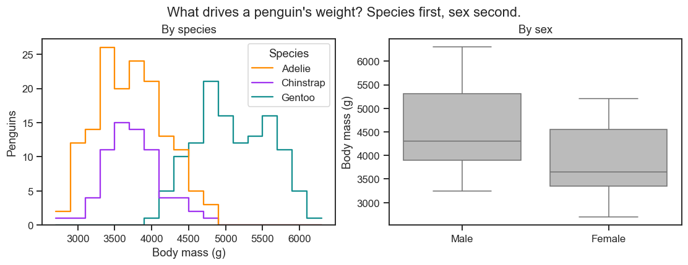
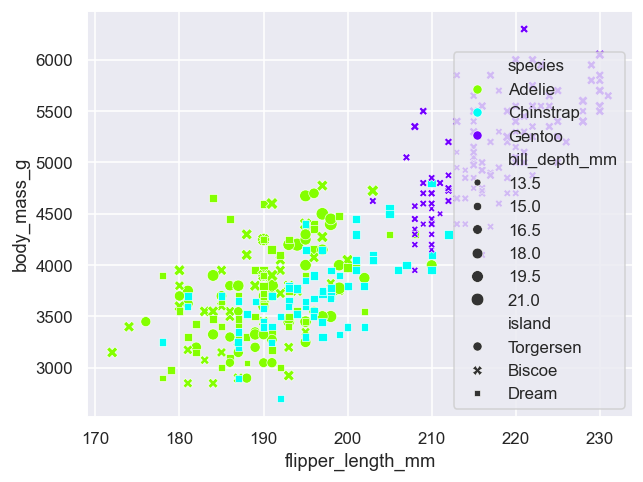
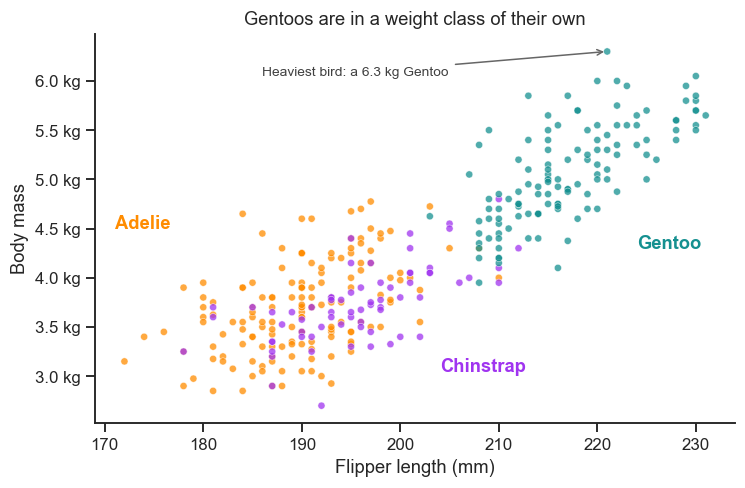
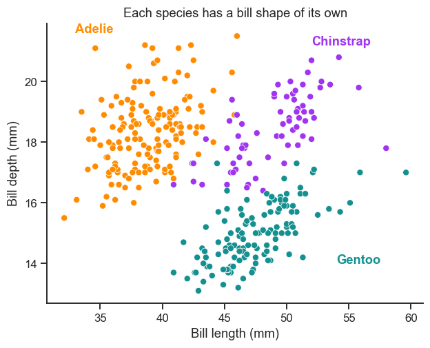
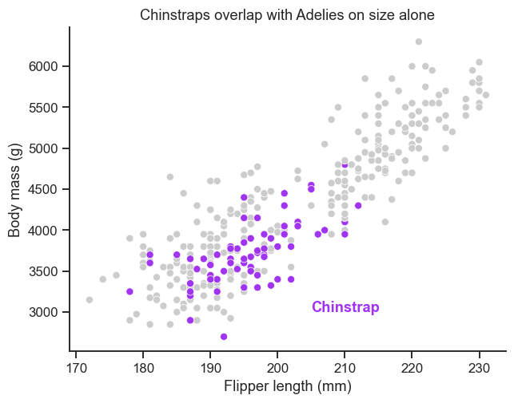

Lesson 6 - From default to deliberate: polish with matplotlib
Seaborn gets you a correct chart fast. Matplotlib gets you the last 20%: the labels, highlights and annotations that turn a chart into a message. This lesson is a makeover.
By the end of this lesson you can:
- set a theme and context with
sns.set_theme - choose categorical, sequential or diverging palettes for the right job
- lay out several charts with
plt.subplotsandax= - highlight, annotate, directly label, and format a chart
- save publication-quality files
import pandas as pd
import matplotlib.pyplot as plt
import seaborn as sns
sns.set_theme(style="ticks")
penguins = sns.load_dataset("penguins")
PENGUIN_COLORS = {"Adelie": "#FF8C00", "Chinstrap": "#A034F0", "Gentoo": "#159090"}
SEX_COLORS = {"Female": "#8c8c8c", "Male": "#333333"}
How seaborn and matplotlib fit together
A matplotlib Figure is the canvas. Each Axes is one plotting area on it, with its own x-axis, y-axis, title and legend. Seaborn’s axes-level functions draw into an Axes. Everything you add afterwards (labels, lines, text, tick formats) is plain matplotlib called on that same ax.
Themes and contexts
sns.set_theme(style=..., context=...) changes defaults for every chart that follows. style controls the background and grid, and context scales fonts and lines for where the chart will be shown ("paper", "notebook", "talk", "poster").
fig = plt.figure(figsize=(12, 2.8))
for i, style in enumerate(["darkgrid", "whitegrid", "ticks", "white"]):
with sns.axes_style(style): # temporarily switch style
ax = fig.add_subplot(1, 4, i + 1)
sns.histplot(data=penguins, x="body_mass_g", binwidth=250, ax=ax)
ax.set(title=f'style="{style}"', xlabel="Body mass (g)", ylabel="")
fig.tight_layout()

This course uses "ticks". It’s quiet, with no gridlines competing with the data. Use "whitegrid" when readers need to read values off the axis.
Palettes do jobs
Pick a palette by what color has to say:
from matplotlib.colors import ListedColormap
palettes = {
'Categorical - which group? sns.color_palette("colorblind")': sns.color_palette("colorblind", 6),
'Sequential - how much? sns.color_palette("crest")': sns.color_palette("crest", 7),
'Diverging - above or below a midpoint? sns.color_palette("vlag")': sns.color_palette("vlag", 7),
}
fig, axes = plt.subplots(3, 1, figsize=(8, 3.4))
for ax, (name, pal) in zip(axes, palettes.items()):
ax.imshow([list(range(len(pal)))], cmap=ListedColormap(pal), aspect="auto")
ax.set_title(name, loc="left", fontsize=10)
ax.set_axis_off()
fig.tight_layout()

- Categorical for identity (species, island). Hues differ, none “bigger” than another.
"colorblind"is a safe default. - Sequential for magnitude (counts, mass). One hue, light to dark.
- Diverging for data with a meaningful middle (correlation, change from average). Two hues with a neutral center.
Avoid rainbow palettes
Rainbows ("hsv", "jet") have no natural order. They create false boundaries where hues shift, and they fail for colorblind readers. About 1 in 12 men has some color-vision deficiency. This course’s PENGUIN_COLORS were tested to stay distinguishable under the common types.
Highlight: gray is your best color
When the story is about one group, make everything else gray:
focus = "Gentoo"
colors = {sp: (PENGUIN_COLORS[sp] if sp == focus else "#cccccc") for sp in PENGUIN_COLORS}
ax = sns.scatterplot(data=penguins, x="bill_length_mm", y="bill_depth_mm",
hue="species", palette=colors, legend=False)
ax.text(55, 14.2, "Gentoo", color=PENGUIN_COLORS[focus], fontweight="bold")
ax.set(xlabel="Bill length (mm)", ylabel="Bill depth (mm)",
title="Gentoos have long but shallow bills")
sns.despine()

Use color sparingly, and only to mean something
Stephen Few’s advice: use soft, muted colors for most of the data and save bright, saturated color for what you want noticed. If everything is bright, nothing stands out.
Layouts: plt.subplots + ax=
To combine different chart types, build the grid with matplotlib and hand each Axes to seaborn:
fig, axes = plt.subplots(1, 2, figsize=(10, 3.8), layout="constrained")
sns.histplot(data=penguins, x="body_mass_g", hue="species", palette=PENGUIN_COLORS,
element="step", fill=False, binwidth=200, ax=axes[0])
axes[0].set(xlabel="Body mass (g)", ylabel="Penguins", title="By species")
axes[0].get_legend().set_title("Species")
sns.boxplot(data=penguins, x="sex", y="body_mass_g", color="#bbbbbb", ax=axes[1])
axes[1].set(xlabel="", ylabel="Body mass (g)", title="By sex")
fig.suptitle("What drives a penguin's weight? Species first, sex second.")

layout="constrained" spaces titles and labels automatically. Use it for every multi-panel figure.
The makeover
Here is a chart made with every default and every option turned on:
with sns.axes_style("darkgrid"): # the busiest style, scoped to this one chart
ax = sns.scatterplot(data=penguins, x="flipper_length_mm", y="body_mass_g",
hue="species", style="island", size="bill_depth_mm", palette="hsv")

Three encodings, a rainbow palette, a legend covering the data, and raw column names. It contains the data, but it doesn’t say anything. Here’s the same data made deliberate:
fig, ax = plt.subplots(figsize=(7.5, 4.6))
sns.scatterplot(data=penguins, x="flipper_length_mm", y="body_mass_g",
hue="species", palette=PENGUIN_COLORS, s=22, alpha=0.75,
legend=False, ax=ax)
# 1. Label the groups directly - no legend to decode
for species, (x, y) in {"Adelie": (171, 4500), "Chinstrap": (204, 3050),
"Gentoo": (224, 4300)}.items():
ax.text(x, y, species, color=PENGUIN_COLORS[species], fontweight="bold")
# 2. Annotate the one point worth talking about
heaviest = penguins.loc[penguins["body_mass_g"].idxmax()]
ax.annotate("Heaviest bird: a 6.3 kg Gentoo",
xy=(heaviest["flipper_length_mm"], heaviest["body_mass_g"]),
xytext=(186, 6050), color="0.25", fontsize=9,
arrowprops={"arrowstyle": "->", "color": "0.4"})
# 3. Units people think in
ax.yaxis.set_major_formatter(lambda value, pos: f"{value / 1000:.1f} kg")
# 4. Plain words, a title that makes the point, no box
ax.set(xlabel="Flipper length (mm)", ylabel="Body mass",
title="Gentoos are in a weight class of their own")
sns.despine()

Every change removes work for the reader. They don’t look back and forth to a legend. Their eye goes to the one point worth mentioning. They read “5.0 kg” instead of “5000”, and the title tells them what to see.
Stephen Few’s checklist, applied
| Principle | In code |
|---|---|
| Maximize data-ink, cut non-data ink | style="ticks", sns.despine(), no redundant legend |
| One encoding per variable, only the ones you need | drop style= and size= that don’t serve the question |
| Label directly when you can | legend=False + ax.text(...) |
| Highlight what matters | gray context + one strong color, ax.annotate(...) |
| Titles and labels in plain language with units | ax.set(title=..., xlabel=...), tick formatters |
| Consistent color for the same thing | one dict palette, reused everywhere |
Saving your work
fig.savefig("penguin-makeover.png", dpi=200, bbox_inches="tight") # sharp raster for slides/docs
fig.savefig("penguin-makeover.svg", bbox_inches="tight") # vector: crisp at any size
bbox_inches="tight" trims empty margins and keeps labels from being cut off. With a figure-level grid, call g.savefig(...) (or g.figure.savefig(...)).
Your turn
Show a solution
sns.set_theme(style="ticks")
ax = sns.scatterplot(data=penguins, x="bill_length_mm", y="bill_depth_mm",
hue="species", palette=PENGUIN_COLORS, legend=False)
for species, (x, y) in {"Adelie": (33, 21.6), "Chinstrap": (52, 21.2),
"Gentoo": (54, 14.0)}.items():
ax.text(x, y, species, color=PENGUIN_COLORS[species], fontweight="bold")
ax.set(xlabel="Bill length (mm)", ylabel="Bill depth (mm)",
title="Each species has a bill shape of its own")
sns.despine()

Show a solution
colors = {sp: (PENGUIN_COLORS[sp] if sp == "Chinstrap" else "#cccccc") for sp in PENGUIN_COLORS}
ax = sns.scatterplot(data=penguins, x="flipper_length_mm", y="body_mass_g",
hue="species", palette=colors, legend=False)
ax.text(205, 3000, "Chinstrap", color=PENGUIN_COLORS["Chinstrap"], fontweight="bold")
ax.set(xlabel="Flipper length (mm)", ylabel="Body mass (g)",
title="Chinstraps overlap with Adelies on size alone")
sns.despine()

Quick quiz
Q1. Edward Tufte’s “data-ink ratio”, which Stephen Few builds on, says you should…
Q2. What is the main advantage of labeling lines or groups directly instead of using a legend?
Q3. How do you draw a seaborn chart into the second panel of fig, axes = plt.subplots(1, 2)?
ax=. Figure-level functions don’t - they make their own figure.Q4. Your chart is about one species. What does Few recommend for color?
Key takeaways
set_theme(style, context)sets defaults. Pick palettes by job: categorical, sequential or diverging.- Combine chart types with
plt.subplots(..., layout="constrained")andax=. - Polish with matplotlib on the returned
ax:set,text,annotate,axhline/axvline, tick formatters,sns.despine(). - Save with
fig.savefig(..., dpi=200, bbox_inches="tight").